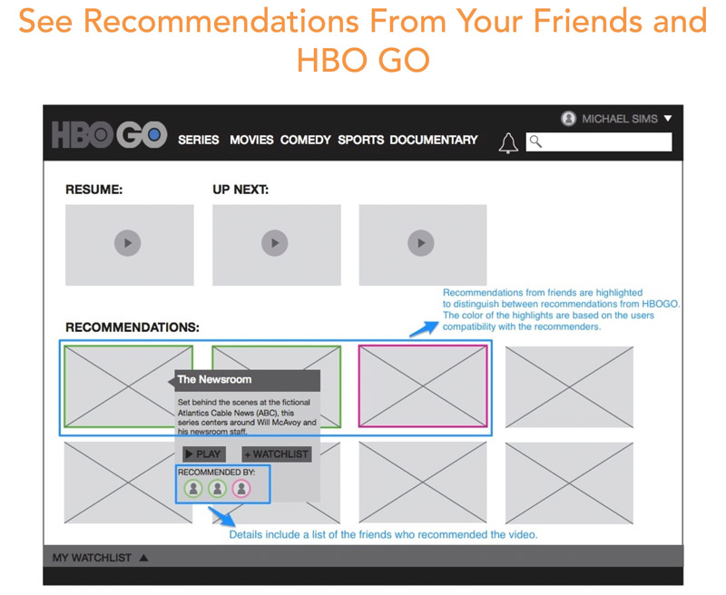
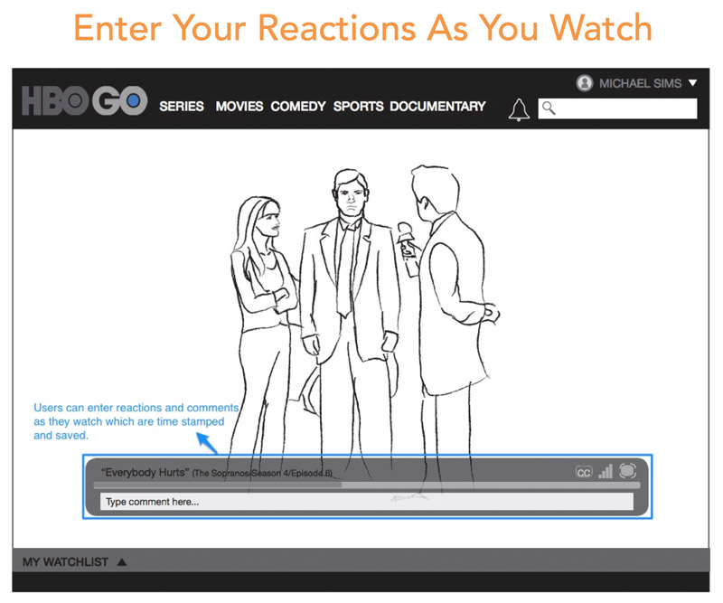
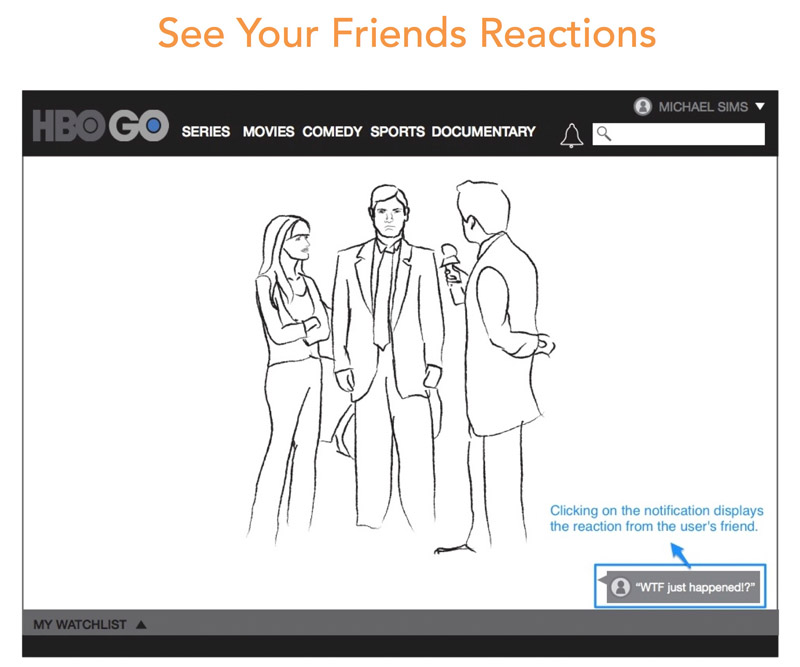
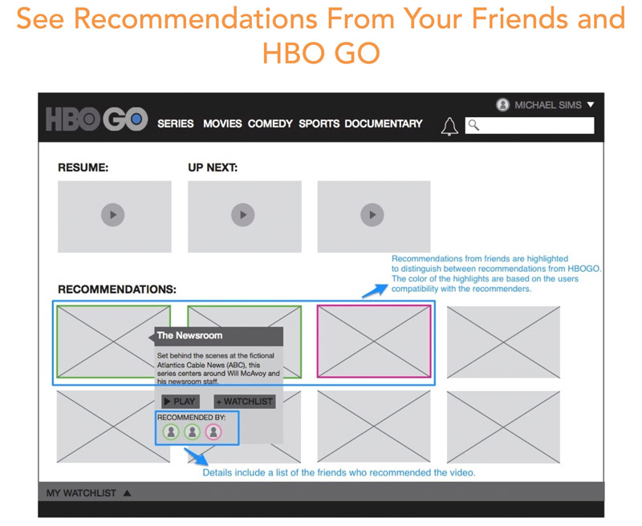
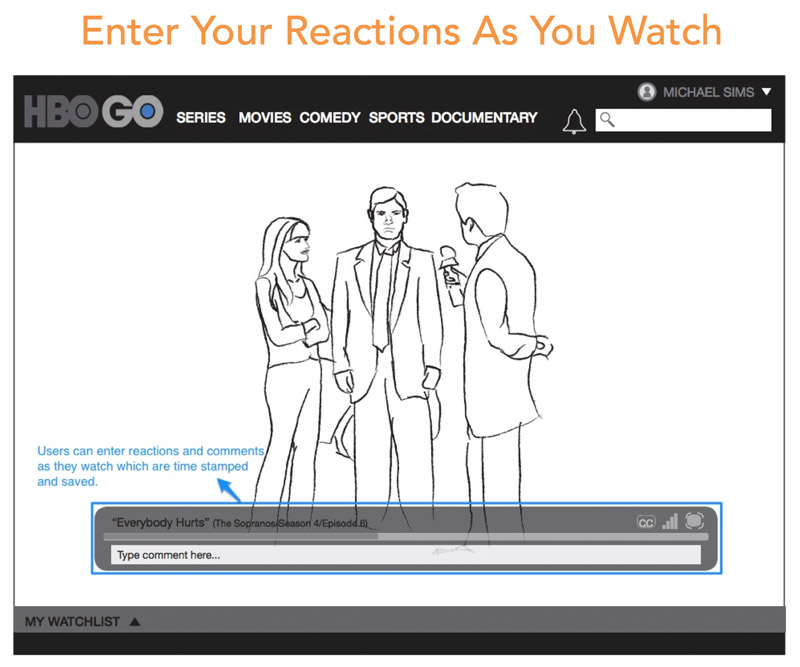
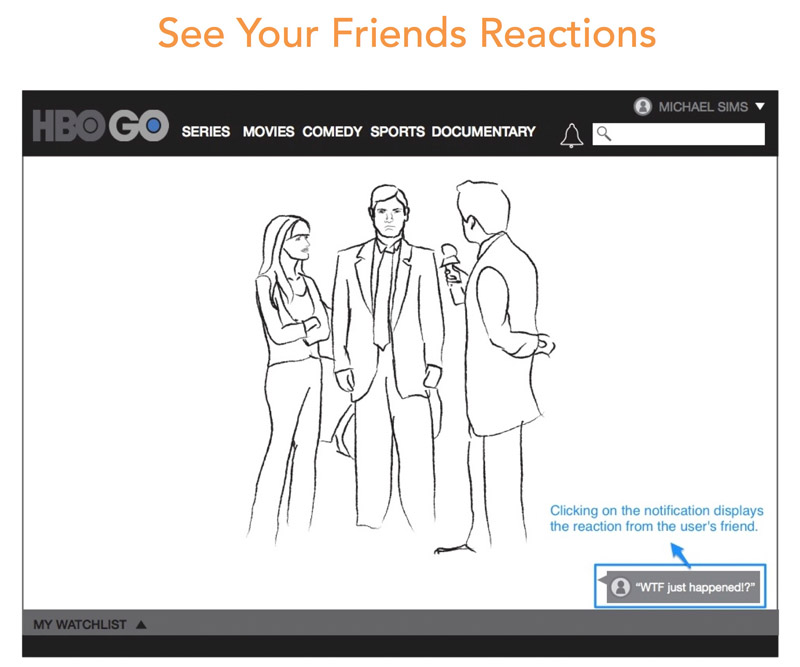

HBOGO: UX Strategy & Redesign
What if HBOGO.com was built around a network of your friends allowing you to send and receive recommendations, and see each others reactions to a particular scene?
The goal of this project was to develop a new UX strategy for HBOGO.com. The UX strategy was based on insights gathered from extensive research on industry trends, a competitive analysis, a heuristic analysis, and user interviews. These insights also informed the development of personas and principles to design against.
Each principle was presented with a sketch highlighting some of the new features. CLICK HERE to view the UX strategy presentation slides.
The second phase of the project involved developing wireframes based on our strategy and final user experience. These wireframes showed the redesigned homepage, as well as integrated social features to enhance, not only the viewing experience, but the discovery of new content on HBOGO.
CLICK HERE to view the wireframe presentation slides.
 





My Role
All of the work shown here was completed by myself for User Experience II at UCLAx. The course was conducted similar to what one might do in an agency, which is why the presentation slides in the links often say “we” rather than “I.”
Methods
- Secondary research
- Heuristic analysis
- User interviews
- Competitive analysis
- Sketching
- Wireframing
Tools
- Illustrator
- InDesign
- Keynote